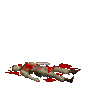
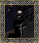
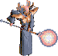

| |
任务介绍
骸骨之厅
The Bone Chamber |
最终版中该任务实际上是原始 Beta 版变体与墓穴介绍的结合产物.
...这知识可是非同小可. 强大具有毁灭性力量的法术被永久封印在了骸骨之厅中. 一条魔法梯道表明了入口, 许多人都试图再次揭开封印其中的力量, 但他们最终都变成了守护者的盘中餐. 这里给你一个警告.
(Book of Novaness = 钥匙) 这是新星法术.
注: 如你所见, 几乎没有提到有宝物, 而需要提及的则是你会得 Nova-法术而不是守护者法术, 这表明了这个法术与最终版本中的相比较弱.
最终版本: .. 英雄大厅(Hall of Heroes)下就是骸骨之厅(Chamber of Bone). 永恒的死亡等待着那些胆敢探寻并窃取宝物的人. 恐惧之王如是说, 因此也述诸笔墨.
(读完守护者之书后) 获得秘法知识!
|
迷宫
The Maze |
名称(可以参看任务发生简表[Appendix B]来看看在开发过程中任务的发生, 名称和地点是如何变化的)并非是唯一不同之处, 该任务发生的地点, 并不是修改过后的第4层入口 (首次出现在在最终版本中[banner1&banner2.dun]), 但也有推测有一处独立关卡叫做 maze(迷宫)[lv1mazea&lv1mazeb.dun].
Albrecht 王子, 李奥瑞克及大主教 Lazarus 相关的任务
完整的 Albrecht-Leoric-Lazarus- 内容并未在暗黑破坏神早期内容中出现, 就算稍后涉及到了叛节的大主教时, 你也无法在最终发售版之前发现.
|
屠夫
The Butcher |
下面的语音并不是未知的, 因为它在最终版的mpq文件中也是作为声音文件出现, 但这个有关受伤镇民的语音只是一个较早的版本而非修改后的版本, 其中并没有提到有关 Lazarus(他引诱这些镇民步入陷阱)的内容:
|
 |
受伤的镇民:
请帮助我! 我侥幸从…屠夫那里逃脱! …他杀了…我的妻子…我的孩子! 我求求你…以上帝的名义…为他们复仇… |
注: 相关声音文件: deadguy2.wav (这里别被文件名弄糊涂了, 这个我呢就在最终版本的暗黑破坏神中的名称是 wound01.wav 而不是deadguy1.wav, 这就是我们所意识到的, 应该有一个名称为 deadguy1 的文件, 但它并没有出现在 Beta, PrDemo 版及mpq文件中).
|
骷髅王
The Skeleton King |
继续读下去以了解无后的国王没有教会顾问陪伴, 没人能想象到在疯掉之前, 他在最终版本里的形象所具有的仁慈.
|
 |
Ogden:
我希望能得到你的帮助. 多年前一位堕落的国王使用巫术毁灭了自己的国家. 他使用自己的黑暗力量杀死了所有人, 这样他就能让那些死尸复活加入自己的邪恶大军.
国王的骑士中有一位挺身而出最终击败了他; 现在国王沉睡于大教堂的墓穴之中. 如今邪恶再次降临大地, 我害怕这个骷髅王又会再次出动, 集结一支不死大军.
如果你杀死了邪恶的国王, 他就无法集结骷髅战士的军团侵略我们的土地. 你需要找到下面第3层中国王的墓穴.
骷髅王的不死仆从还在侵蚀这片土地! 你必须杀死这个暗黑国王, 不然这些行尸走肉会毁灭一切的! 他的墓穴就在下面的第3层.
你从可怕的邪恶手中拯救了这片土地. 国王再次安息, 不死部落不会回来了. 感谢你… |
主教 Bishop Lazarus
The Bishop Lazarus |
你会获得一件非常有趣的奖励品, 这里需要提一下的是, Lazarus 并没有在下面的一层出现{这就是为何Diablo"就在下一层"[除了Lazarus出现的原因外, 这里有一封电子邮件, 它是发给beta订阅者的, 其中包含了一些有趣的信息, 比如其中提到了最终游戏中会有5个不同的层面, 而我们最终之看到了4个(即教堂, 墓穴, 洞穴和地狱) “第17层”的理论就变得非常有可能了(实际上这只是一个次级关卡(比如李奥瑞克的藏身处), 这里可以通过16层中的一个传送门到达, 但在最终版本发售的日子里, 为其赋予“第十七层”的头衔会比较妥当]. 因为如果这是一处地点, 那么就应该有自己的专属(第五)层面, 那么就必然是迪亚波罗的了}.
触发: Tremain, the Priest
要点: 阻止主教完成献祭仪式, 并让他付出代价.
(可能)奖励: 武器 Lightforge
|
 |
Tremain:
我从教会那里带了话来. 从黑暗意义上来说, 主教 Lazarus 已经被腐化了.
他的背叛让迪亚波罗在我们的世界里落了脚, 而他现在正在继续实施迪亚波罗的阴谋. 我们已经查出他目前位于教堂下方第16层. 我们必须阻止他, 并让他的灵魂安息. 你为何还在拖延?! Lazarus 正在毁灭我们. 快行动!
我的心终于卸下了重负. 安息吧, Lazarus 主教. 我认为你有资格获得教会的神圣武器. 教会决定授予你 Lightforge. 好好地善用它把, 愿上帝与你同在!
这太糟了, 我不知道还有没有这样的机会. 但还是值得一试, 祝你好运, 孩子. 我恐怕你会面对更多的恐惧, 勇敢地直面它们就必定会成功. |
 |
Lazarus:
入侵者! 你胆敢干涉我们的命运?!
你将缓慢痛苦地死去! 太迟了! 现在来尝尝地狱的忿怒吧! |
两种结局:
-
你及时赶到, 这样就会听到 Tremain 的第一个对话内容, 然后他还会赞美褒奖并授予你一件神圣礼物. 但你还没有完成, 你还得面对迪亚波罗, 不过手持这把武器对付没有防备的迪亚波罗不是难事, 对不?
- 你没能及时赶到, 但出乎意料之外的是, 就算你迟到了, Lazarus 并没有拦住你的去路. 满怀疑惑但心满意足的你回到崔斯特瑞姆并回复 Tremain 时, 你会发现 Tremain 很不高兴, 这在他的第四个对话中有所表明, 而且也没送你礼物, 不过好在他还祝你好运. 现在你还希望能弄明白怎么回事, Tremain 说还是值得一试到底是什么意思, 然后你就会回到16层, 发现那里专门为你开了一道传送门. 等你穿过传送门后, 你就再也不确信了, 在那里除了迪亚波罗和一些地狱生物外, 你还会看到 Lazarus 用第二个对白向你致意. 想弄明白 Tremain 要说的是什么, 何时还有机会除掉这个 Lazarus, 但谁又都不会想到的是, 第二次机会看起来为何如此艰难?
|
|
|